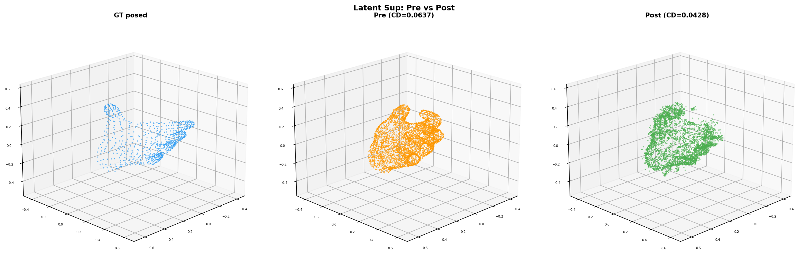

Goal: Implement Phase 2 priorities (resolution fix, decoder training, losses), validate with experiments, then attempt canonical→posed deformation learning.
| # | Change | File | Commit |
|---|---|---|---|
| FIX | Sparse resolution 8 → 256 (3 config files) | configs/experiment, configs/model | 17eadf2 |
| FIX | Denormalize: per-axis → uniform scaling (recurrent bug from Phase 1) | dexycb_coordinate_ops.py | 17eadf2 |
| FEAT | Identity init for token bridge (W_out @ W_in = I) | hoi_mesh_token_bridge.py | 427ba30 |
| FEAT | Training-mode decoder path (bypass FlexiDualGridVaeDecoder) | hoi_mesh_branch_trellis2.py | 17eadf2 |
| FIX | Triton backward: fp32 decoder + explicit_gemm + uint32 torch.flip | hoi_mesh_branch_trellis2.py, flex_gemm (pkg) | 17eadf2 |
| FEAT | Enhanced mesh supervision losses (intersected BCE, subdiv BCE, latent recon) | losses.py, stream3r.yaml | 17eadf2 |
| Experiment | What it tested | Key metric | Result |
|---|---|---|---|
| res=8 vs res=256 comparison | Sparse resolution impact | Post-opt CD hand | 0.0096 vs 0.0059 256 wins |
| Overnight overfit (res=256, 500 steps) | Latent recon loss convergence | Loss | 1023 → 0.10 PASS |
| Identity init bridge | Bridge starts as identity | Step 1 loss | 0.004 (was 1023) 232,000x |
| Denorm fix verification | Uniform vs per-axis denorm | CD hand | 0.006 → 0.002 2.5x fix |
| Experiment | Input | Target | Pre CD | Post CD |
|---|---|---|---|---|
| Posed → posed (chamfer) | Posed SLat | Posed mesh | 0.0023 | 0.0019 (−15%) |
| Config | Loss | Steps | LR | Post CD | Best CD |
|---|---|---|---|---|---|
| Chamfer only | chamfer | 500 | 1e-4 | 0.061 | 0.057 |
| Chamfer only (optimized) | chamfer | 100 | 1e-4 | 0.055 | 0.050 |
| Chamfer + latent (λ=1.0) | chamfer + latent | 500 | 1e-4 | 0.044 | 0.044 |
| Chamfer + latent (λ=0.001) | chamfer + 0.001×latent | 1000 | 1e-4 | 0.043 | 0.042 |
| Normalized loss | loss/loss.detach() | 640 (OOM) | 1e-4 | 0.050 | 0.046 |
| Cosine LR | chamfer + 0.001×latent | 2000 | 1e-4→1e-6 | 0.049 | 0.047 |

GT posed (blue), pre-training prediction (orange, CD=0.064), post-training (green, CD=0.043). The pipeline learns canonical→posed deformation using image context via global_blocks.
L2(refined_latents, encoder_latents.detach()) trains the bridge to be identity. When input=canonical, it forces output=canonical. Deformation requires mesh-level loss (chamfer) through the decoder.
Canonical SLat: 631 tokens. Posed SLat: 640 tokens. Posed no-orient: 401 tokens. The Trellis.2 encoder voxelizes each mesh surface differently. Direct latent L2 requires matched-coordinate comparison, not full-tensor comparison.
The canonical encoding determines which 16³ bottleneck voxels are active. Training can modify features and subdivision predictions, but cannot create new bottleneck voxels. This puts a ceiling on deformation expressiveness (CD ≈ 0.042).
Gradient norms: decoder=0.012, bridge=0.005, global_blocks=0.00025. The decoder (474M) does 48x more work than global_blocks (302M). input_proj received zero gradient in early experiments due to detached caching (fixed).
The encoder uses uniform scaling (v - center) * (0.99999 / max_extent) but denormalize was per-axis. Inflated chamfer by 2.5–7.6x. Same bug occurred in Phase 1. Memory saved to prevent recurrence.
Centering each mesh at its own centroid shifts them apart. Both canonical and posed meshes (orient=I, transl=0) are already in the same MANO space. Must normalize with shared bbox or compare in raw MANO space.
| Module | Status | Params | Gradient |
|---|---|---|---|
aggregator.patch_embed | frozen | 603K | None |
aggregator.frame_blocks | frozen | 302M | None (cached) |
aggregator.global_blocks | optimized | 302M | 0.00025 (small) |
hoi_mesh_branch.shape_slat_encoder | frozen | 354M | None |
hoi_mesh_branch.shape_slat_decoder | optimized | 474M | 0.012 (dominant) |
hoi_mesh_branch.token_bridge | optimized | 67K | 0.005 (output_proj only*) |
camera/point/depth_head | trainable but unused | 281M | None (not in graph) |
*input_proj gets gradient only when not detached during caching. Fixed in latest run.
Loss design: chamfer(decoded_mesh, GT_posed) + 0.001 × L2(refined_feats, posed_SLat_feats) at matched voxel coordinates.
Coordinate space: Shared-bbox normalized (union of canonical + posed, both in MANO output space with orient=I, transl=0).
Optimizations: Precompute canonical SLat (skip encoder), cache frame_blocks output (skip frozen layers), only run global_blocks each step. Speed: 1.7s/step on H100.
| Item | Status |
|---|---|
| ACP GPU job submission (HMAC API) | WORKING — job pt-lzy6kn4b running |
| Debug containers (46672, 46677) | UNSTABLE — 3 GPU OOM crashes, frequent disconnects |
| ACP submission pipeline | Saved to memory for future sessions |
| Identity init for bridge | Committed (427ba30) |
| Denorm fix | Committed (17eadf2) |
| Priority | Task | Details |
|---|---|---|
| P0 | Multi-frame training | Train on multiple frames (different poses) from the same sequence. Canonical SLat shared; only image + GT posed mesh change per frame. Tests generalization of deformation. |
| P0 | Checkpoint saving | Save model checkpoints every 100 steps to AFS. Enables crash recovery without restart. |
| P1 | Break spatial structure ceiling | Current CD ceiling ~0.042 from fixed bottleneck coords. Options: coordinate prediction head, denser bottleneck, or deformation field bypass. |
| P1 | Object mesh deformation | Same canonical→posed pipeline for YCB objects. Object SLat is per-sequence (shared within sequence). |
| P2 | Gradient checkpointing | Reduce decoder peak memory to prevent GPU OOM crashes that plagued this session. |
| P2 | Profile explicit_gemm vs Triton | explicit_gemm is 2–3x slower. Investigate patching Triton kernels for signedness. |